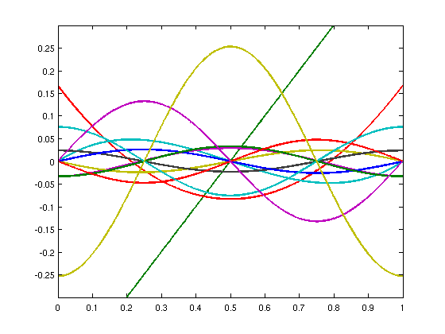
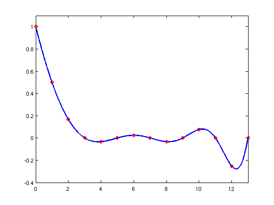
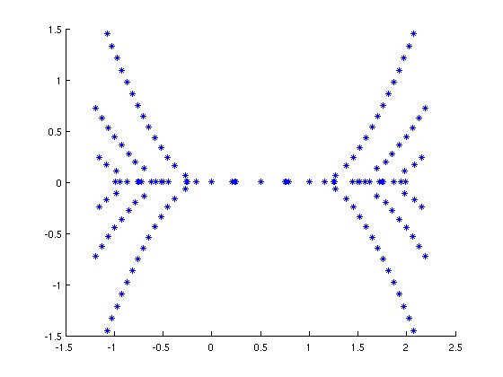
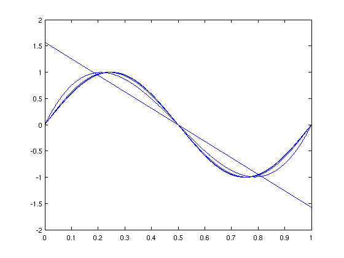
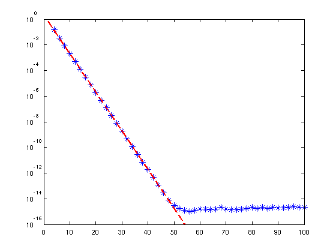
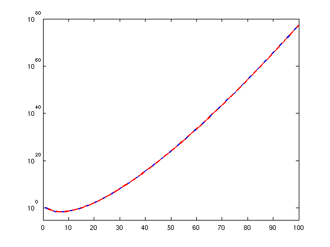

The Mystery of Bernoulli Polynomials
Stefan Güttel, 8th February 2012
(Chebfun example roots/BernoulliPolynomials.m)
If there is another class of polynomials that is as fascinating and important to mathematics as orthogonal polynomials, then these are probably the Bernoulli polynomials B_j(x), deg(B_j) = j. These polynomials appear in the most different areas of mathematics, and have a variety of applications. In this example we have cited from the excellent Wikipedia articles [1] and [2], and a talk of Karl Dilcher [3].
Bernoulli polynomials are typically defined on the interval [0,1]. They can be generated recursively by integrating and adding a constant such that the definite integral equals zero. Let us build a quasimatrix whose (j+1)-st column is B_j(x), and plot the first 13 polynomials:
close all; clear all LW = 'linewidth'; lw = 2; format short x = chebfun('x',[0,1]); B(:,1) = 0*x + 1; for j = 1:100, B(:,j+1) = j*cumsum(B(:,j)); B(:,j+1) = B(:,j+1) - sum(B(:,j+1)); end plot(B(:,1:13),LW,lw) axis([0,1,-.3,.3])
The function values B_j(0) are called Bernoulli numbers. Here are the first 14 Bernoulli numbers:
B(0,1:14)
ans =
Columns 1 through 7
1.0000 -0.5000 0.1667 0.0000 -0.0333 -0.0000 0.0238
Columns 8 through 14
0.0000 -0.0333 0.0000 0.0758 -0.0000 -0.2531 -0.0000
These numbers turn out to be the Taylor coefficients of z/(exp(z)-1). Moreover, they are related to certain function values of the famous Riemann zeta function at integer arguments. In fact, the unresolved Riemann Hypothesis has an alternative reformulation due to Marcel Riesz (1916) in terms of Bernoulli numbers! Matlab doesn't come with a ZETA function, but if you have one available (see [4], for example), we can verify that the function values f(j), j = 0,...,13, coincide with the above Bernoulli numbers (for j = 1 the sign is switched):
if exist('zeta','file') f = chebfun(@(x) -x.*zeta(1-x),[0,13]); plot(f,LW,lw); hold on j = 0:13; f(j) plot(j,f(j),'ro',LW,lw); axis([0,13,-.4,1.1]); hold off end
ans =
Columns 1 through 7
1.0000 0.5000 0.1667 0.0000 -0.0333 -0.0000 0.0238
Columns 8 through 14
-0.0000 -0.0333 0.0000 0.0758 -0.0000 -0.2531 0
 Note that (except for j = 1) every second Bernoulli number is zero. These correspond to the trivial zeros of the Riemann zeta function. Using the above function f (and a generalization involving the so-called Hurwitz zeta function), one can define Bernoulli numbers (and polynomials) of non-integer index.
Bernoulli polynomials have the property that the number of (distinct) roots in the interval [0,1] is at most 3. We can easily verify this assertion numerically:
for j = 1:100, nrRoots(1,j) = length(roots(B(:,j))); end nrRoots(1:14) fprintf('The maximal number of roots is %d.\n',max(nrRoots))
ans =
Columns 1 through 13
0 1 2 3 2 3 2 3 2 3 2 3 2
Column 14
3
The maximal number of roots is 3.
The multiplicity and location of complex roots has been of interest to many mathematicians over a long time. It is now known that all roots of the Bernoulli polynomials are distinct (Brillhart 1969, Dilcher 2008). It is also known that there exists a parabolic region above and below the interval [0,1] which is free of roots (Dilcher 1983/88):
figure for j = 1:20, r = roots(B(:,j),'all'); plot(r+1i*eps,'b*') hold on end hold off
Another interesting observation is the following: If one appropriately scales the even/odd Bernoulli polynomials, then these converge to cosine/sine functions, respectively. Let us visualize the first 50 rescaled Bernoulli polynomials of odd degree, and compute the distance to the expected limit function in the uniform norm:
err = []; limit = sin(2*pi*x); for j = 1:50, b = (-1)^(j)*(2*pi)^(2*j-1)/2/factorial(2*j-1)*B(:,2*j); plot(b) err(2*j) = norm(b - limit,inf); hold on end hold off
It is known that this convergence is geometric with rate 0.5:
semilogy(err,'b*','MarkerSize',10) hold on semilogy(0.5.^(0:99),'r--',LW,lw) hold off axis([0,100,1e-16,1])
The last property we like to mention and visualize here is the behavior of extrema of Bernoulli polynomials on [0,1]. D. H. Lehmer (1940) showed that the j-th degree Bernoulli polynomial is bounded by
2*factorial(j)/(2*pi)^j
for j > 1, except when j is 2 modulo 4, in which case the bound becomes
2*zeta(j)*factorial(j)/(2*pi)^j,
again with the Riemann zeta function.
fact = cumprod([1,1:99]); bound = 2*fact./(2*pi).^(0:99); for j = 1:100, M(j) = max(B(:,j)); if mod(j-1,4) == 2 && exist('zeta','file') bound(j) = bound(j)*zeta(j-1); end end semilogy(M,LW,lw); hold on semilogy(bound,'r--',LW,lw) axis([0,100,1e-5,1e80])
This bound looks quite sharp, and in fact, if one would remove the zeta(j) factor from the bound then it would be invalid every 4-th index.
References:
[1] Wikipedia article on Bernoulli polynomials as of 08/01/2012, http://en.wikipedia.org/wiki/Bernoulli_polynomials
[2] Wikipedia article on Bernoulli numbers as of 08/01/2012, http://en.wikipedia.org/wiki/Bernoulli_numbers
[3] K. Dilcher, On Multiple Zeros of Bernoulli Polynomials, Talk at the 2011 "Special Functions in the 21st Century" conference in Washington, http://math.nist.gov/~DLozier/SF21/SF21slides/Dilcher.pdf
[4] Paul Godfrey, Special Functions math library, http://www.mathworks.com/matlabcentral/fileexchange/978